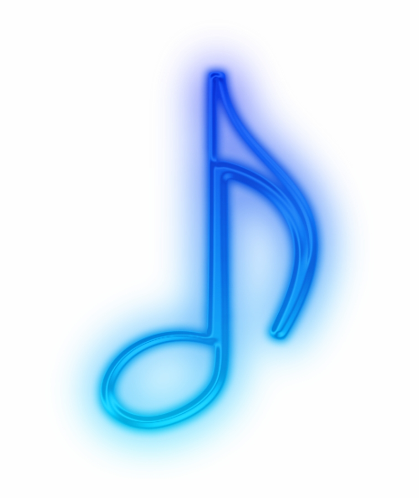

DiskoTek
Las más escuchadas
Canciones Favoritas
Artistas Favoritos
Álbumes Favoritos
Agregar a Favoritos
DiskoTek
Búsqueda por Canción
Buscar
Limpiar
Agregar a Favoritos
DiskoTek
Búsqueda por Artista
Buscar
Limpiar
Top Tracks
Similares
Agregar a Favoritos
DiskoTek
Búsqueda por Álbum
Buscar
Limpiar
Agregar a Favoritos
Inicio
Canciones
Artistas
Álbumes